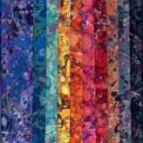

<section class="col-md-6 catalog">
  <h1>Catalog</h1>
  <div class="row">
    <div class="col-md-6 col-sm-3 col-xs-6">
      
      <a href="cotton-fabrics.html">Cotton Fabrics</a>
      <a href="bluesandteals.html">Blues and Teals</a>, <a href="earthtones.html">Earthtones</a>, <a href="fuschias.html">Fuschias</a>, <a href="greysandblacks.html">Grays and Blacks</a>, <a href="silk-fabrics.html">More..</a>    
    </div>
    <div class="col-md-6 col-sm-3 col-xs-6">
      
      <a href="silk-fabrics.html">Silk Fabrics</a>
      <a href="bluesandteals.html">Blues and Teals</a>, <a href="earthtones.html">Earthtones</a>, <a href="fuschias.html">Fuschias</a>, <a href="greysandblacks.html">Grays and Blacks</a>, <a href="silk-fabrics.html">More..</a>
    </div>
  
    <div class="col-md-6 col-sm-3 col-xs-6">
      
     <a href="variety-packs.html">Cotton Variety Packs</a>
    </div>
    <div class="col-md-6 col-sm-3 col-xs-6">
      
      <a href="accessories.html">Accessories</a>
    </div>
  </div>
</section>
<aside class="col-md-3">
  <p>Marjorie has been creating unique marbled cottons and silks since 1986. She began marbling fabric for quilts, but soon became so busy producing fabric for others that she had little time for quilting. In 1994, Marjorie began to sell fabric wholesale to quilt shops and designers.</p>

  <p>Through this website you can order custom fabrics directly from Marjorie. The images on these pages are just a small sampling of the range of colors and patterns which are available. If you have a specific request in mind, please contact Marjorie by phone or email.</p>
</aside>


        

  
